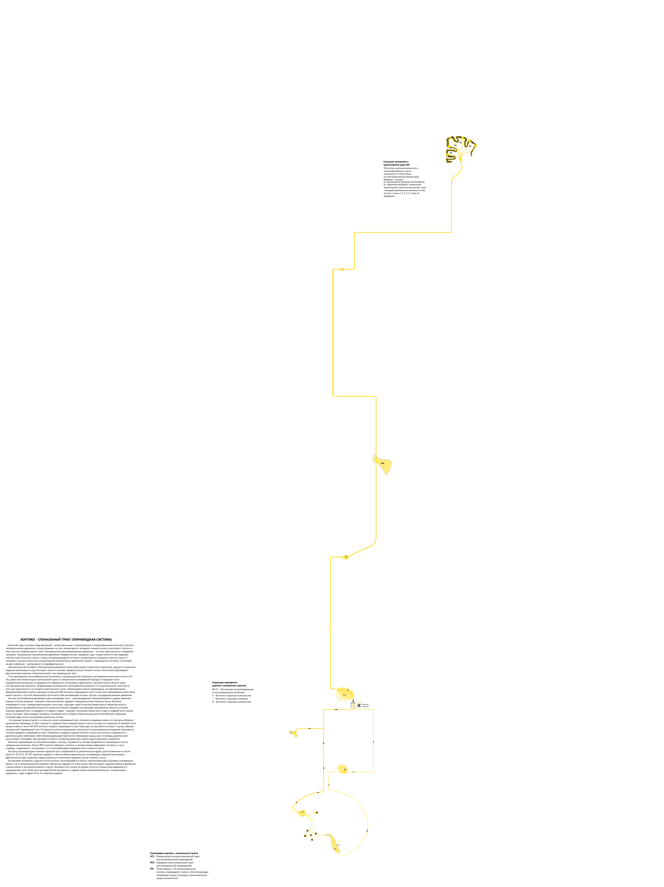
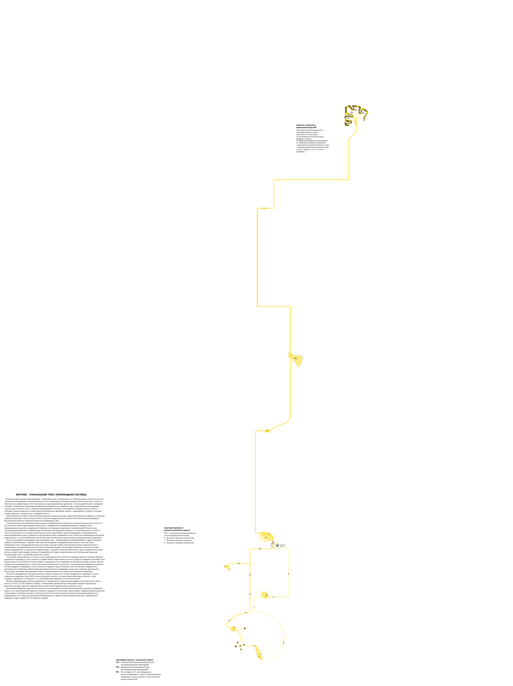

# Favicons
X
Нейротектоника V1.0
-
+
Пирамидные двигательные пути
- Передний и латеральный кортикоспинальные тракты
- Мышечная система
- Кортиконуклеарный тракт
-
+
Экстрапирамидные двигательные пути
- Вестибуло-спиноцеребеллярный тракт
- Оливоспинальный тракт
- Ретикулоспинальный тракт
- Руброспинальный тракт
- Текто-спинальный тракт
-
+
Пути поверхностной чувствительности
- Передний и латеральный спиноталамический тракт
-
+
Пути глубокой чувствительности
- Тонкий и клиновидный тракты (Голя и Бурдаха)
- Задний спино-мозжечковый тракт
- Передний спино-мозжечковый тракт
-
+
Черепно - мозговые нервы
- Обонятельный нерв (1 пара)
- Оптический нерв (2 пара)
-
Глазодвигательный, блоковый, отводящий нервы (3,4,6 пары)
- Тройничный нерв (5 пара)
- Лицевой нерв (7 пара)
- Предверно-улитковый нерв (8 пара)
- Языкоглоточный нерв (9 пара)
- Блуждающий нерв (10 пара)
- Добавочный нерв (11 пара)
- Подъязычный нерв (12 пара)
-
+
Ассоциативные тракты конечного мозга
- Лобномостомозжечковый тракт
- Теменно-затылочно-мостомозжечковый тракт
- Кохлео-кортикальный (слуховой) путь
- Нигро-паллидарная система
- Кортико-стриараная система
-
+
Ассоциативные тракты ствола мозга
- Аркуато-церебеллярный тракт
- Вестибуло-кортикальный тракт
- Зубчато-красноядерно-таламический
- Оливо-церебеллярный тракт
- Пучок Рассела (мозжечково-ядерный путь)
- Ретикуло-церебеллярный тракт
- Церебелло-ретикулярный тракт
-
+
Автономная нервная система
- Симпатическая НС
- Парасимпатическая НС
-
+
Неврологические синдромы (Beta)
- ДЦП - Гипрекинетическая форма
- ДЦП - Спастическая диплегия
- ДЦП - Спастическая гемиплегия
- Синдром Броун - Секара
- Обозначение структур ЦНС


 
